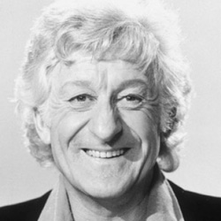

Jon PertweeJohn Devon Roland "Jon" Pertwee (7 July 1919[1] – 20 May 1996) was an English actor, entertainer and cabaret performer. Pertwee spent 18 years (1959–1977) playing Chief Petty Officer Pertwee in The Navy Lark on BBC Radio, and also starred as the Third Doctor in the science-fiction series Doctor Who from 1970 to 1974, and as the title character in the series Worzel Gummidge from 1979 to 1981. As an actor, Pertwee appeared in many comedy roles and was noted for his "rubbery features and ability to affect silly voices".[2] Earlier in his career, Pertwee had worked as a vaudeville comedian, performed at the Glasgow Empire Theatre and shared a bill with Max Wall andJimmy James. Towards the end of his life, he entertained audiences with a one-man show called Who Is Jon Pertwee?. |
|
Julia Schwartz Ann Marie Skjold |
Content derived from the Doctor Who Wikipedia |